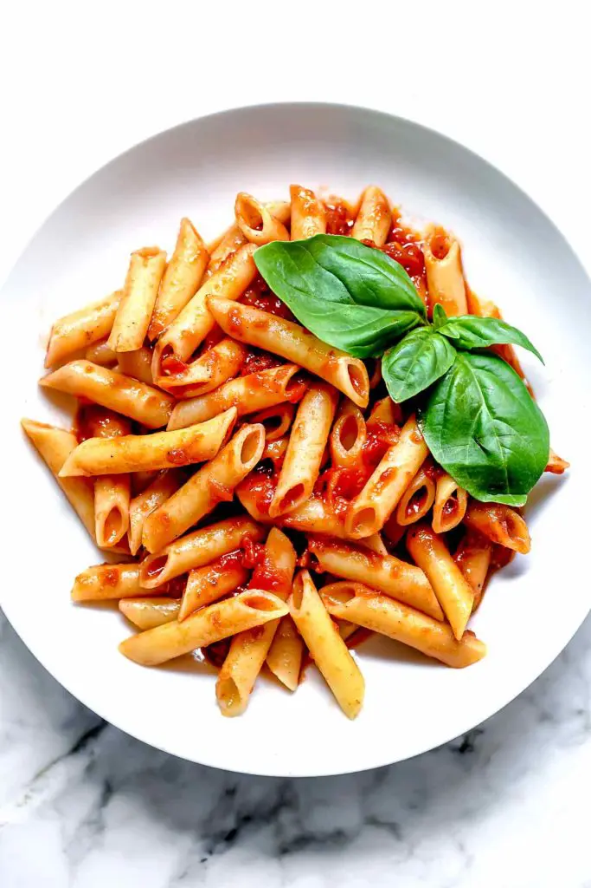

Pasta

Simple Penne Pasta Marinara
Consider this healthy penne pasta recipe with tomato sauce the Forrest Gump of easy dinners: Simple is as simple does. It’s straightforward in both its ingredient list and method, but it’s full of heart too. Like my favorite tomato soup with a grilled
cheese, or the best stovetop mac and cheese, I turn to this dish when uncomplicated home cooking is what’s needed fast.
This penne with quick-from-scratch marinara is made with canned tomatoes, tomato paste, and fresh garlic steeped in olive oil to make an all season pasta that’s warm and comforting in the fall and winter but light and bright for spring and summer
eats. If you’re looking for a pasta sauce using fresh tomatoes, check out my homemade pomodoro sauce recipe here.
Ingredients
- Whole San Marzano tomatoes in their purée. Be sure to choose legit San Marzano tomatoes that are canned whole in a sauced tomato purée
- Extra virgin olive oil
- Garlic
- Tomato paste
- Basil or oregano
- Kosher salt and freshly ground black pepper
Steps
- Use your fingers to crush canned, whole tomatoes for the sauce. Pour the tomatoes into a bowl then crush with your fingers or the back of a spoon. Whole tomatoes give the sauce body but keeps it thin, light, and just the right
bits of chunk. Don’t substitute puréed or crushed tomatoes. They will make the sauce too thick.
- Flavor the oil with crushed garlic instead of minced. As smashed, whole garlic cloves steep in the hot extra virgin olive oil, it becomes sweet and soft and continues to cook in the tomatoes when combined. Some of the garlic will
melt into the sauce as it cooks, leaving the larger pieces to be fished out before combining with the pasta, or, leave them in if you wish.
- Brown the tomato paste for deeper flavor. Cooking the tomato past in the garlic-laced oil takes away the raw edge of tomato sauce to create a richness that deepens this sauce’s flavor.
- Add a pinch of sugar if needed. Tomatoes are acidic vegetables and sometimes require a pinch or two of sugar to coax out their sweetness.
- Cook the pasta 2 minutes shy of being al dente. The pasta will continue to cook in the sauce, absorbing the flavors as it does.
- Don’t drain the pasta. Instead, transfer the pasta from it’s cooking water directly into the simmering sauce (don’t worry too much about bits of water coming along for the ride.)
- Toss the pasta in the sauce and continue to cook until done. If needed, add a few tablespoons of the pasta water to loosen the pasta or if it seems like there won’t be enough. The starch in the sauce helps thicken it as well.
- Taste for seasoning, garnish, and serve. Add more salt or red chili flakes if a little more punch is needed, and don’t forget a big bunch of basil
Can You Freeze Penne Pasta?
Instead of buying one of those containers of frozen pasta at the grocery store, this penne pasta makes a great freeze-then-heat, make-ahead dish. Prepare the pasta to completion then freeze in individual portion containers (these containers are microwave
and freezer safe) to be warmed before eating later. Pasta can be frozen for up to 2 months.